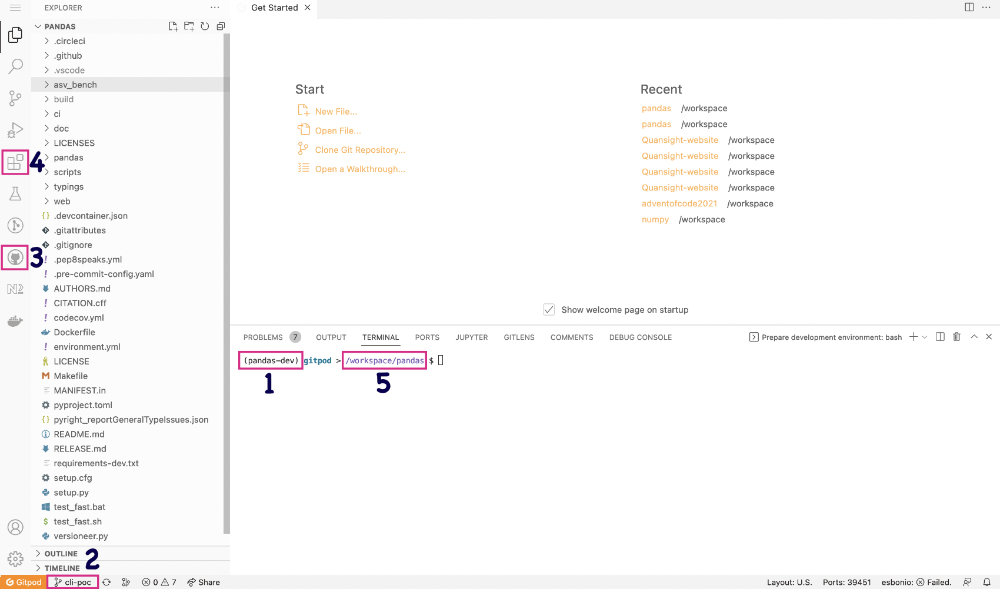

使用 Gitpod 进行 pandas 开发#
文档的本节将指导您
使用 Gitpod 作为您的 pandas 开发环境
在 GitHub 上创建 pandas 仓库的个人 fork
快速了解 pandas 和 VSCode
在 Gitpod 中处理 pandas 文档
Gitpod#
Gitpod 是一个用于自动化和即时可用的开发环境的开源平台。它使开发人员能够将他们的开发环境描述为代码，并直接从浏览器中为每个新任务启动即时且全新的开发环境。这减少了安装本地开发环境和处理不兼容依赖项的需要。
Gitpod GitHub 集成#
为了能够使用 Gitpod，您需要在 GitHub 帐户上安装 Gitpod 应用程序，所以如果您还没有帐户，则需要先创建一个。
要开始，只需登录 Gitpod，并授予 GitHub 适当的权限。
我们已构建了一个 Python 3.10 环境，所有开发依赖项将在环境启动时安装。
Fork pandas 仓库#
作为贡献者参与 pandas 项目的最佳方式是首先 fork 仓库。
浏览到您的 fork。您的 fork 的 URL 将类似于 noatamir/pandas-dev，只是其中的
noatamir会替换为您的 GitHub 用户名。
启动 Gitpod#
通过 GitHub 认证 Gitpod 后，您可以安装 Gitpod Chromium 或 Firefox 浏览器扩展，它将在仓库的 Code 按钮旁边添加一个 Gitpod 按钮。
如果您安装了扩展程序，可以点击 Gitpod 按钮启动新工作区。
或者，如果您不想安装浏览器扩展，可以访问 https://gitpod.io/#https://github.com/USERNAME/pandas，将
USERNAME替换为您的 GitHub 用户名。在这两种情况下，这都将在您的网络浏览器中打开一个新标签页并开始构建您的开发环境。请注意，这可能需要几分钟。
构建完成后，您将被引导到您的工作区，包括 VSCode 编辑器和您处理 pandas 所需的所有依赖项。第一次启动工作区时，您可能会注意到正在运行一些操作。这将确保您已安装 pandas 的开发版本。
当您的工作区准备就绪时，您可以输入以下命令来测试构建：
$ python -m pytest pandas
请注意，此命令运行需要一段时间，因此一旦确认其正在运行，您可能希望使用 Ctrl-C 取消它。
工作区快速导览#
Gitpod 使用 VSCode 作为编辑器。如果您以前没有使用过此编辑器，可以查看 Getting started VSCode 文档以熟悉它。
您的工作区将类似于下图
我们已在编辑器中标记了一些重要部分
您当前的 Python 解释器——默认情况下，它是
pandas-dev，应显示在状态栏和您的终端中。您无需激活 conda 环境，因为它将始终为您激活。您当前的分支始终显示在状态栏中。您也可以使用此按钮来更改或创建分支。
GitHub Pull Requests 扩展——您可以使用此扩展程序从您的工作区处理拉取请求。
市场扩展——我们为 pandas Gitpod 添加了一些必要的扩展。但是，您也可以为您的用户安装其他扩展或语法高亮主题，这些将为您保留。
您的工作区目录——默认情况下是
/workspace/pandas-dev。请勿更改此目录，因为它是 Gitpod 中唯一保留的目录。
我们还预装了一些工具和 VSCode 扩展，以帮助提升开发体验：
Gitpod 开发工作流程#
本文档的为 pandas 贡献部分包含有关 pandas 开发工作流程的信息。在开始您的贡献之前，请务必查看此部分。
使用 Gitpod 时，Git 已为您预先配置。
您无需配置您的 git 用户名和电子邮件，因为当您通过 GitHub 认证时，这应该已为您完成。除非您使用 GitHub 功能来保持电子邮件地址私密。您可以通过在终端中输入命令
git config --list来检查 git 配置。使用git config --global user.email “your-secret-email@users.noreply.github.com”将您的电子邮件地址设置为您用于通过 GitHub 个人资料提交的电子邮件地址。由于您是从您自己的 pandas fork 启动工作区的，因此默认情况下，
upstream和origin都将作为远程添加。您可以通过在终端中键入git remote来验证，或者通过点击状态栏上的分支名称（参见下图）。
渲染 pandas 文档#
您可以在如何构建 pandas 文档部分找到有关如何使用 Sphinx 渲染文档的详细信息。要构建完整的文档，您需要在 /doc 目录中运行以下命令：
$ cd doc
$ python make.py html
或者，您可以构建单个页面：
python make.py --single development/contributing_gitpod.rst
您有两种主要选项可以在 Gitpod 中渲染文档。
选项 1：使用 Liveserve#
在
pandas/doc/build/html中查看文档。要查看页面的渲染版本，您可以右键点击
.html文件并点击 Open with Live Serve。或者，您可以在编辑器中打开文件并点击状态栏上的 Go live 按钮。一个简单的浏览器将在编辑器的右侧打开。我们建议关闭它，然后点击弹出窗口中的 Open in browser 按钮。
要停止服务器，请点击状态栏上的 Port: 5500 按钮。
选项 2：使用 rst 扩展#
在处理 .rst 文件时，一种快速简便的方法是使用 rst 扩展与 docutils 结合来实时查看更改。
注意
这将生成文档的简单实时预览，不包含 html 主题，并且一些反向链接可能未正确添加。但它是一种简单轻量级的方式，可以即时获取您工作的反馈，而无需构建 html 文件。
在编辑器中打开
doc/source中任何源文档文件。在 Mac 上使用 Cmd-Shift-P，在 Linux 和 Windows 上使用 Ctrl-Shift-P 打开 VSCode 命令面板。开始输入“restructured”并选择“Open preview”或“Open preview to the Side”。

在您编辑文档时，您将在编辑器中看到它的实时渲染。

如果您想查看包含 html 主题的最终输出，您需要使用 make html 重新构建文档，并按照选项 1 中所述使用 Live Serve。
常见问题与故障排除#
我的 Gitpod 工作区会保留多久？#
您停止的工作区将保留 14 天，之后如果未使用将被删除。
我可以回到之前的工作区吗？#
是的，假设您离开了一段时间，并且想继续为 pandas 贡献。您需要访问 https://gitpod.io/workspaces 并点击您想要重新启动的工作区。您的所有更改都将保留在您上次离开时的状态。
我可以安装额外的 VSCode 扩展吗？#
当然！您安装的任何扩展都将安装在您自己的工作区中并得以保留。
如果我不使用工作区，它会保持活动状态多久？#
如果您的工作区在浏览器标签页中保持打开状态但不进行交互，它将在 30 分钟后关闭。如果您关闭浏览器标签页，它将在 3 分钟后关闭。
我的终端一片空白——没有光标，也完全没有响应#
不幸的是，这是 Gitpod 方面的一个已知问题。您可以通过两种方式解决此问题：
完全创建一个新的 Gitpod 工作区。
前往您的 Gitpod 仪表板并找到正在运行的工作区。将鼠标悬停在它上面，点击三点菜单，然后点击停止。当工作区完全停止后，您可以点击其名称再次重新启动它。

我已通过 GitHub 认证，但仍然无法通过 Gitpod 提交到仓库。#
前往 https://gitpod.io/integrations 并确保您已登录。将鼠标悬停在 GitHub 上，然后点击右侧出现的三个按钮。点击编辑权限，并确保已勾选 public_repo。点击 Update Permissions 并在 GitHub 应用程序页面确认更改。
致谢#
本页内容略微改编自 NumPy 项目。